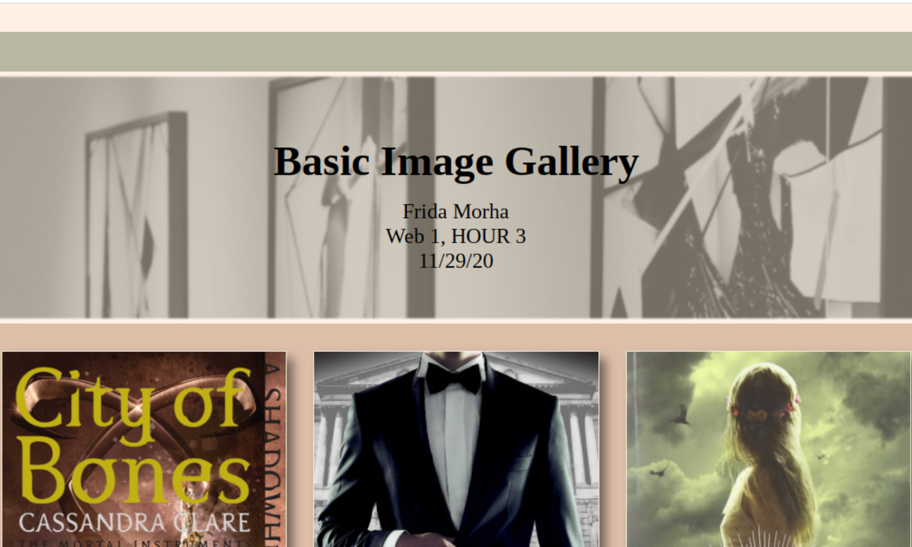

Basic Image Gallery

For our Basic Image Gallery Assignment, we applied a Jumbotron(with an overlay)to our website. We also included about 10 images of the theme we chose for our website. My theme was books I've read. I, sadly,couldn't include them all.